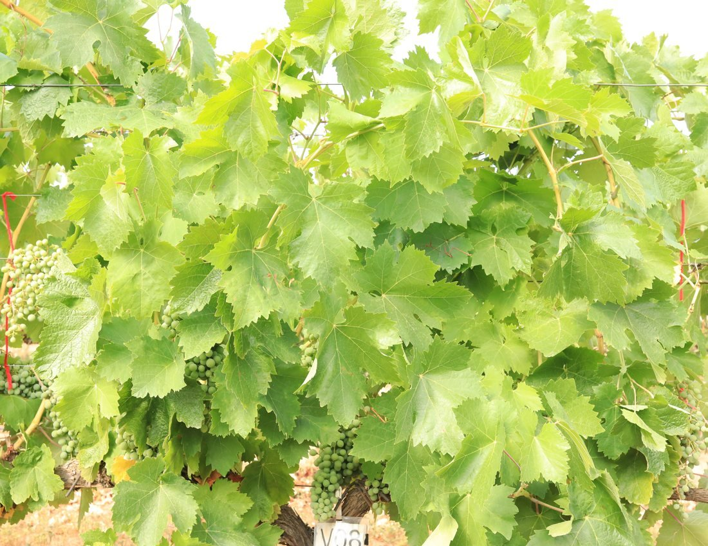
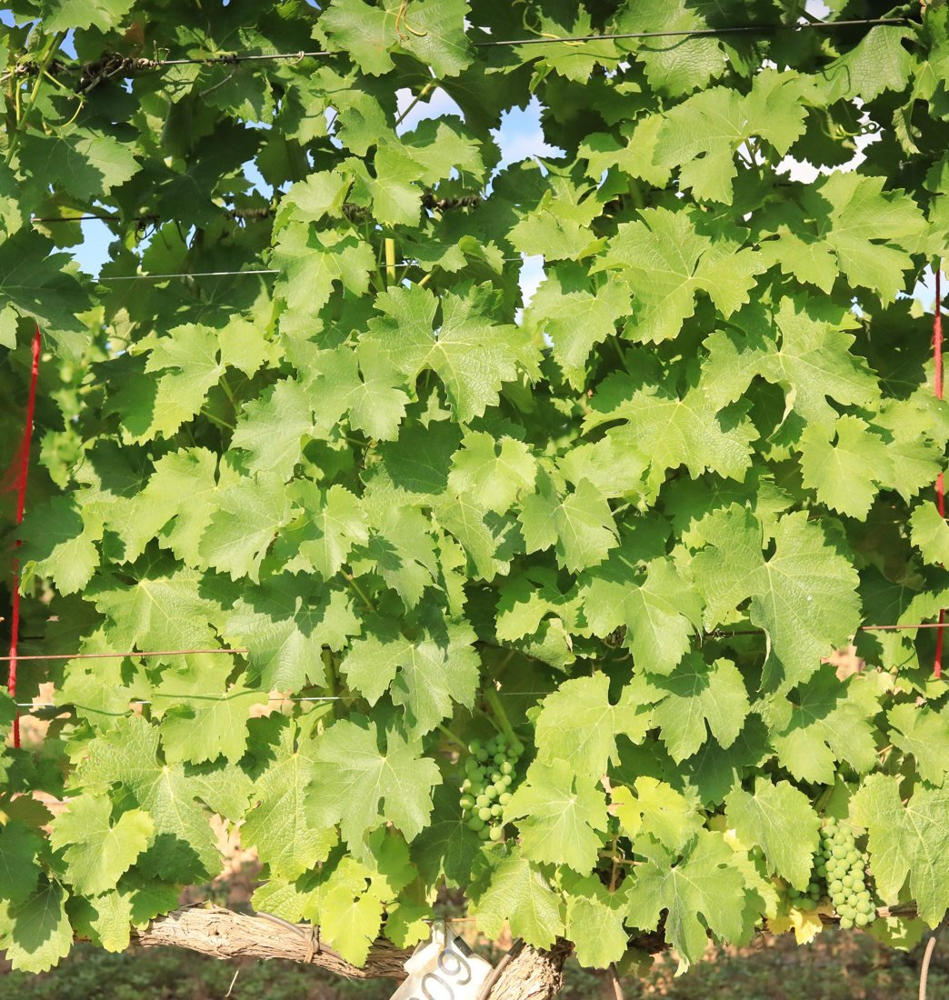
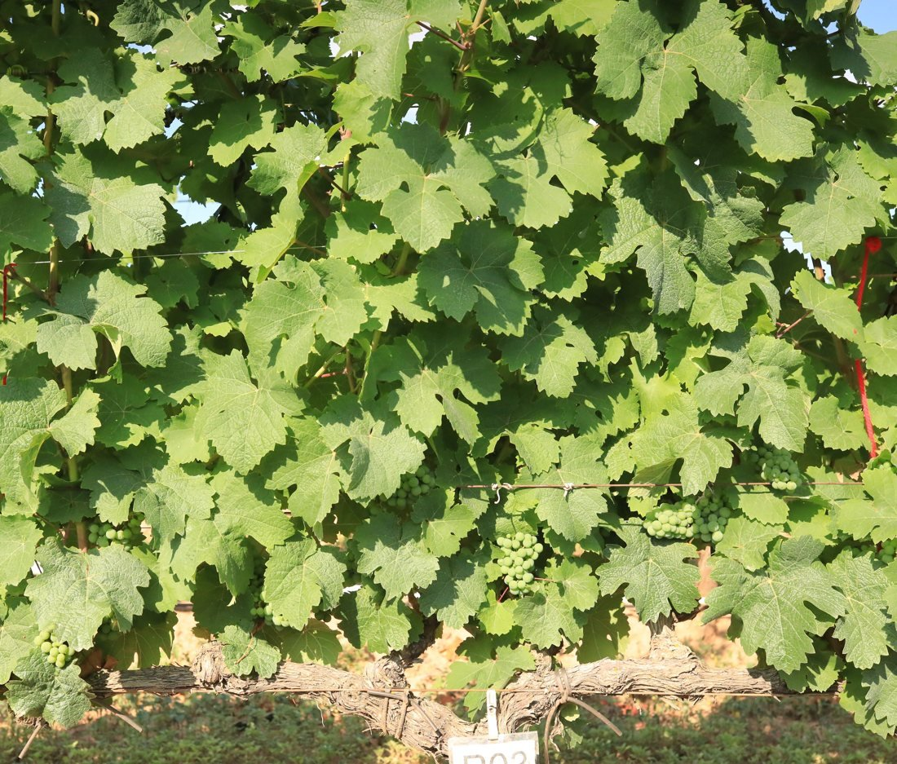
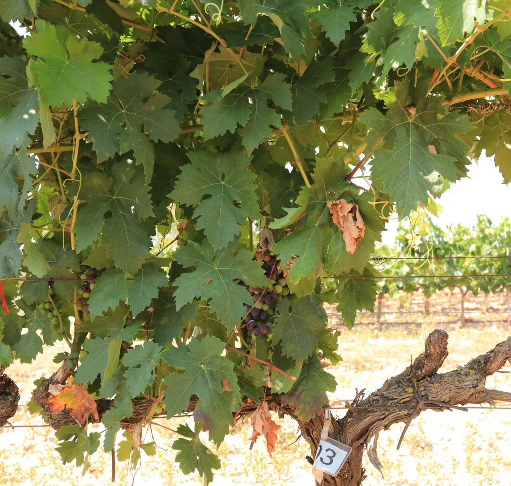
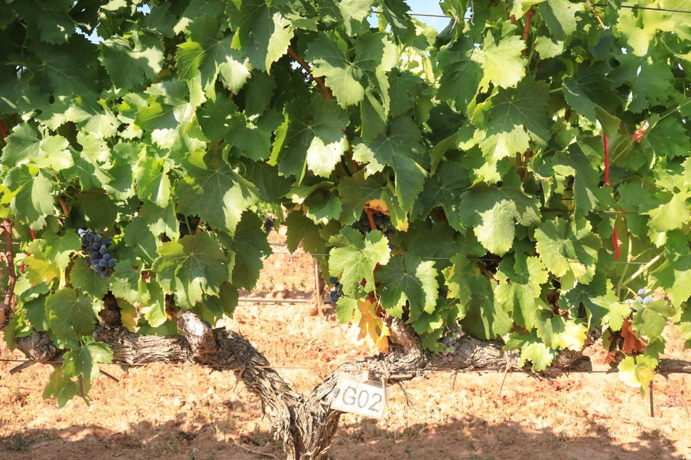
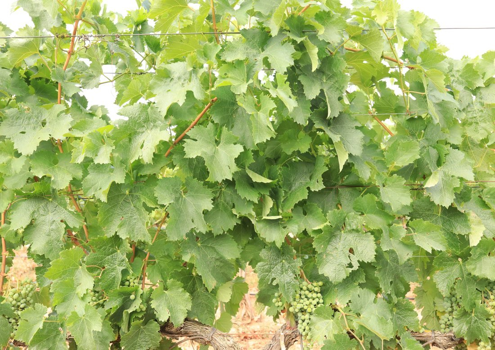

¿Qué variedad es?
Tempranillo, Garnacha, Graciano… ¿distingues una variedad por su hoja?
El problema
Reconocer la variedad de una cepa es clave para el viticultor y para la bodega. La ampelografía clásica lo hace observando la forma de la hoja, el color de los brotes y otros rasgos; también se usan análisis de ADN en laboratorio. Pero las hojas de dos variedades pueden parecer casi iguales a simple vista.
Lo que dice la investigación
Un estudio fotografió con una cámara hiperespectral, desde un vehículo en marcha, hojas de 30 variedades en un viñedo de La Rioja. Con 1.200 muestras espectrales, los modelos clasificaron las variedades con puntuaciones de hasta 0,99 en validación cruzada (Gutiérrez et al., 2018). Es decir: la hoja, vista con una cámara que capta más colores que los nuestros, funciona como un «carné de identidad» de la variedad.
Seis variedades, seis hojas
Estas fotografías son de seis variedades, tres blancas y tres tintas, de la colección de variedades del Instituto de Ciencias de la Vid y del Vino (ICVV) en la Finca Institucional de La Grajera (Logroño), que reúne más de 500 variedades (ICVV, 2020), en la misma época del año. Fíjate en el tamaño de las hojas, en la profundidad de sus cortes (los lóbulos), en el color y en el borde dentado: son los rasgos que la ampelografía lleva siglos mirando.






Así será el juego
Te enseñaremos una hoja y tendrás que adivinar de qué variedad es, a ver si ganas a la máquina.
Para saber más
- Gutiérrez, S., Fernández-Novales, J., Diago, M. P. y Tardaguila, J. (2018). On-the-go hyperspectral imaging under field conditions and machine learning for the classification of grapevine varieties. Frontiers in Plant Science, 9, 1102. doi:10.3389/fpls.2018.01102
- Instituto de Ciencias de la Vid y del Vino [ICVV] (2020, 16 de marzo). Reportaje del Banco de Germoplasma de La Grajera en el suplemento Agro del periódico La Rioja. ICVV (Gobierno de La Rioja, CSIC y Universidad de La Rioja).